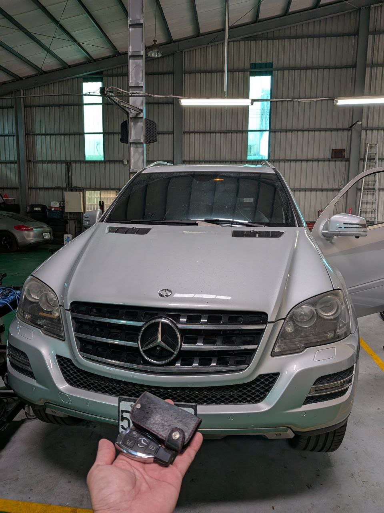

實戰現場：彰化和美車主車庫，執行 Benz ML350 高階解碼
德系豪華 SUV 的安全防線：FBS3 技術解析
Mercedes-Benz ML350 搭載了經典且嚴密的 FBS3 電子防盜系統。對於這類豪華 SUV 而言，新增備用鑰匙不僅是為了方便，更是為了在緊急狀況下擁有一份啟動保障。
在彰化和美現場，我們利用專業紅外線讀取設備，在不拆卸電子轉向鎖（ELV）的情況下，成功採集 EIS 點火開關數據，並透過雲端運算在 30 分鐘內重構密鑰數據，完美匹配全新一代的高質感鍍鉻智慧鑰匙。
無損解碼
採用紅外線非接觸式數據讀取技術，確保原車電路零損傷，維持豪華車應有的完整性。
高效匹配
彰化和美地區專人遠征，現場採集、運算、寫入一氣呵成，大幅節省回原廠等待的時間成本。
為什麼選擇極致核心進行賓士解碼？
賓士的 FBS 系統對數據同步有極高要求。極致核心擁有最新的密鑰生成演算法，能確保新鑰匙的滾動碼（Rolling Code）與原車防盜電腦達到完美的毫秒級同步，穩定性完全對標原廠品質。
🔍 技術延伸：了解更多 賓士 FBS3 數據重構實錄。
需要賓士鑰匙專業支援？
立即預約：0909-277-670